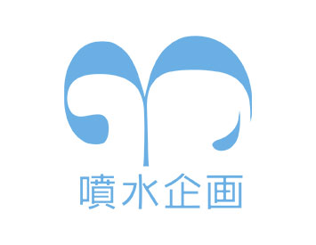
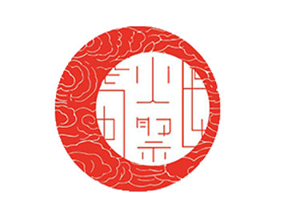
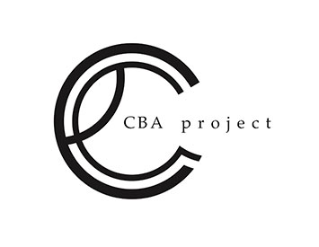
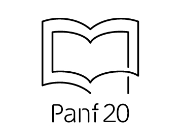

ホーム
芸工祭とは
学祭企画
教室企画
お問い合わせ
HOME
Menu
・ホーム
芸工祭とは
学祭企画
・イベント
テント企画
教室企画
イベント日程
・ご案内
企画団体の方へ
ご視聴の方へ
お問い合わせ
リンク
PP・免責等
学祭企画
Geiko-festival Project
芸工祭では様々な企画がイベントを開催します。
舞台、音響、衣装、照明など全て学生が一から作り上げ、芸工祭を彩ります。
zenya
芸工祭前夜にライブを開催する団体です。ステージに立つ演者はもちろん、照明や映像、音効など全てを自分たちの手で作り上げます。芸工生ならではのライブは圧巻です。

3ken
噴水企画、通称３研は噴水信仰集団です。学祭では主に噴水の周りにステージを組み、そこでイベントをおこないます。昨年はアイドルFONTAINEをプロデュースしました。
5ken
芸工祭の企画・運営を行う実行委員会です。裏方の仕事はもちろん、例年芸工祭当日には子供向けのワークショップや芸工紹介展、野外ライブなど様々な企画も運営しています。

himatsuri
火祭は芸工祭の最後に行われる企画で49年という長い歴史をもっています。芸工祭本番ではみんなで炎柱を囲み、自ら作った麻袋を身にまとい、代々受け継がれた踊りを踊ります。
2ken
２研は音や照明、映像などを組み合わせ、インスタレーションと呼ばれる体験型イベントを提供する団体です。見た人に考えるきっかけとなるような何かを伝えることが目的です。

CBA
CBAは映像、音効、舞台、広報、照明、衣装、演出、モデルの全てを０から作り上げ、既存のものとは異なるエンターテイメント性を兼ね備えたファッションショーサークルです。

Panf
芸工祭で配布するパンフレットの制作をおこなうデザイナー集団です。素材集めからデザイン、全て自分たちでおこないます。趣向を凝らしたパンフレットになっています。